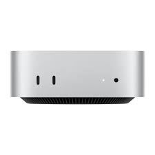

Mac Mini сериясы
Тарихы
Mac Mini — Компактты қуат
Анонстар және шығу күндері
- Алғашқы Mac Mini: 11 қаңтар 2005 жыл
- Mac Mini (Intel): 1 наурыз 2006 жыл
- Mac Mini (M1): 10 қараша 2020 жыл
- Mac Mini (M2): 17 қаңтар 2023 жыл
Негізгі ерекшеліктері
- Apple M1 және M2 чиптері (2020 және 2023 жылғы модельдер үшін)
- Компактты дизайн (7.7 дюйм x 1.4 дюйм)
- 64 ГБ дейінгі ЖЖҚ және 2 ТБ SSD сақтау орны
- Thunderbolt / USB 4, HDMI 2.0, Gigabit Ethernet порттары
- 3 дисплейге дейін қолдау (M1 моделіне арналған)
Өнімділік және қолдану жағдайлары
Mac Mini — шағын және қуатты құрылғы, үй пайдаланушылары, кәсіпқойлар және әзірлеушілер үшін күшті өнімділікке ие, бірақ өте кішкентай түрінде.
Пікірлер және танымалдылық
Кішкентай өлшемдегі өте жоғары өнімділігі үшін танымал, Mac Mini пайдаланушылар арасында қуатты жұмыс үстелі компьютері ретінде танылған.
Қораптағы заттар мен аксессуарлар
- Қорапта: Mac Mini, қуат кабелі
- Қосымша: Клавиатура, Тышқан, сыртқы сақтау құрылғылары, мониторлар